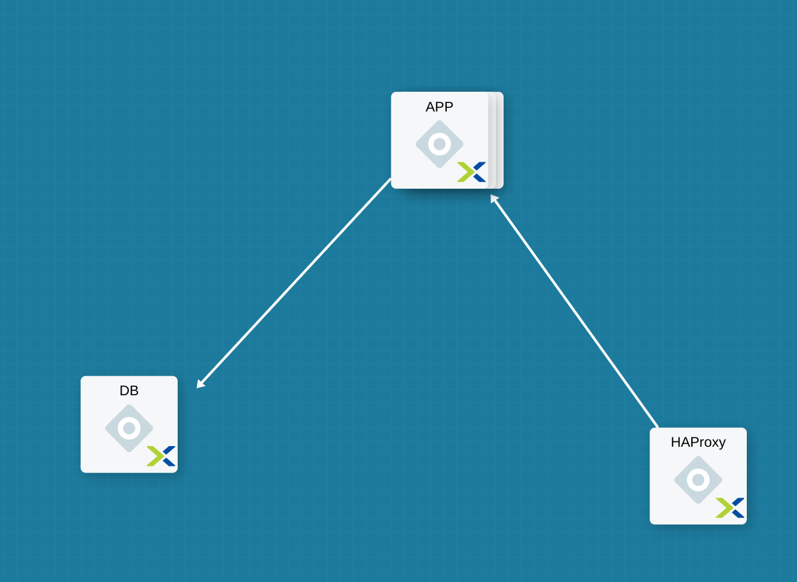

-
- What Is Calm
- Selling Calm
Nutanix Calm
Nutanix Calm Lab
Appendix
In this exercise you will extend the MySQL Blueprint created previously into a basic LAMP Stack (Linux Apache MySQL PHP) deployment with a scalable web tier as shown below.

From Prism Central > Apps, select Blueprints from the sidebar and select your Blueprint from the previous exercise.
In Application Overview > Services, click .
Note Service2 appears in the Workspace and the Configuration Pane reflects the configuration of the selected Service. You can rearrange the Service icons on the Workspace by clicking and dragging them.
With the Apache service icon selected in the workspace window, scroll to the top of the Configuration Panel, click VM.
Scroll to the top of the Configuration Panel, click Package.
Click on the Apache service icon again and fill out the following fields:
Copy and paste the following script into the Script field:
#!/bin/bash
set -ex
sudo setenforce 0
sudo sed -i 's/permissive/disabled/' /etc/sysconfig/selinux
sudo systemctl stop firewalld
sudo systemctl disable firewalld
# -*- Install httpd and php
sudo yum update -y
sudo yum -y install epel-release
sudo rpm -Uvh https://mirror.webtatic.com/yum/el7/webtatic-release.rpm
sudo yum install -y httpd php56w php56w-mysql
echo "<IfModule mod_dir.c>
DirectoryIndex index.php index.html index.cgi index.pl index.php index.xhtml index.htm
</IfModule>" | sudo tee /etc/httpd/conf.modules.d/dir.conf
echo "<?php
phpinfo();
?>" | sudo tee /var/www/html/info.php
sudo systemctl restart httpd
sudo systemctl enable httpd
Select the Apache service icon in the workspace window again and scroll to the top of the Configuration Panel, click Package.
Fill out the following fields:
Copy and paste the following script into the Script field:
#!/bin/bash
echo "Goodbye!"
Click Save.
As our application will require the database to be running before the web server starts, our Blueprint requires a dependency to enforce this ordering.
In the Workspace, select the APACHE_PHP Service and click the Create Dependency icon that appears above the Service icon.
Select the MySQL Service. This will hold the execution of APACHE_PHP installation script until the MySQL Service is running.
Click Save.
Calm makes it simple to add multiple copies of a given Service, which is helpful for scale out workloads such as web servers.
In the Workspace, select the APACHE_PHP Service.
In the Configuration Pane, select the Service tab.
Under Deployment Config, change the Max Number of replicas from 1 to 2.
To take advantage of a scale out web tier our application needs to be able to load balance connections across multiple web server VMs. HAProxy is a free, open source TCP/HTTP load balancer used to distribute workloads across multiple servers. It can be used in small, simple deployments and large web-scale environments such as GitHub, Instagram, and Twitter.
In Application Overview > Services, click .
Select Service3 and fill out the following fields in the Configuration Pane:
Scroll to the top of the Configuration Panel, click Package.
Fill out the following fields:
Copy and paste the following script into the Script field:
#!/bin/bash
set -ex
sudo setenforce 0
sudo sed -i 's/permissive/disabled/' /etc/sysconfig/selinux
sudo systemctl stop firewalld
sudo systemctl disable firewalld
port=80
sudo yum update -y
sudo yum install -y haproxy
echo "global
log 127.0.0.1 local0
log 127.0.0.1 local1 notice
maxconn 4096
quiet
user haproxy
group haproxy
defaults
log global
mode http
retries 3
timeout client 50s
timeout connect 5s
timeout server 50s
option dontlognull
option httplog
option redispatch
balance roundrobin
# Set up application listeners here.
listen stats 0.0.0.0:8080
mode http
log global
stats enable
stats hide-version
stats refresh 30s
stats show-node
stats uri /stats
listen admin
bind 127.0.0.1:22002
mode http
stats uri /
frontend http
maxconn 2000
bind 0.0.0.0:80
default_backend servers-http
backend servers-http" | sudo tee /etc/haproxy/haproxy.cfg
sudo sed -i 's/server host-/#server host-/g' /etc/haproxy/haproxy.cfg
hosts=$(echo "@@{APACHE_PHP.address}@@" | sed 's/^,//' | sed 's/,$//' | tr "," "\n")
for host in $hosts
do
echo " server host-${host} ${host}:${port} weight 1 maxconn 100 check" | sudo tee -a /etc/haproxy/haproxy.cfg
done
sudo systemctl daemon-reload
sudo systemctl enable haproxy
sudo systemctl restart haproxy
Select the HAProxy service icon in the workspace window again and scroll to the top of the Configuration Panel, click Package.
Fill out the following fields:
Copy and paste the following script into the Script field:
#!/bin/bash
echo "Goodbye!"
Click Save.
In the Workspace, select the HAProxy Service and click the Create Dependency icon that appears above the Service icon.
Select the Apache_PHP Service. This will hold the execution of HAProxy installation script until the APACHE_PHP Service is running.
Click Save.
Click Launch. Specify a unique Application Name (e.g. CalmLAMP*<INITIALS>*-2) and click Create.